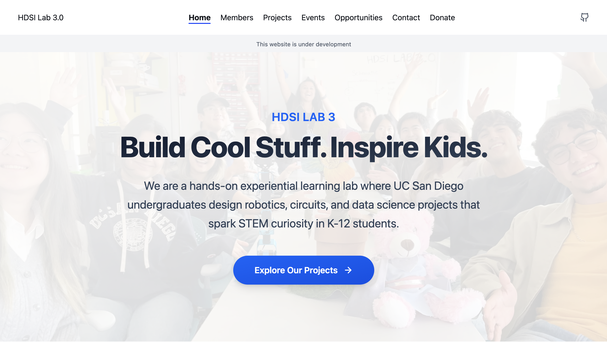
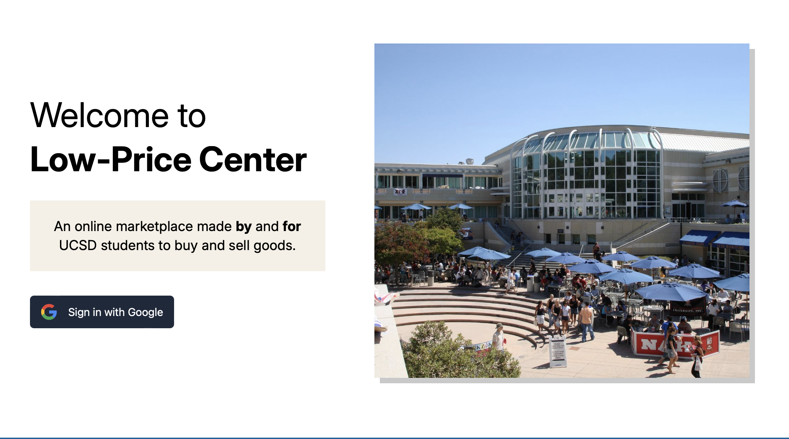

Out of the Blue Visualization Layer

Built a scalable visualization layer and analytics system to support KPI dashboards, anomaly detection, and interactive data exploration.
A collection of technical and creative work.
Built a scalable visualization layer and analytics system to support KPI dashboards, anomaly detection, and interactive data exploration.

Website supporting STEM outreach and lab projects at UC San Diego.

Full-stack marketplace platform with user profiles, listings, and backend APIs.